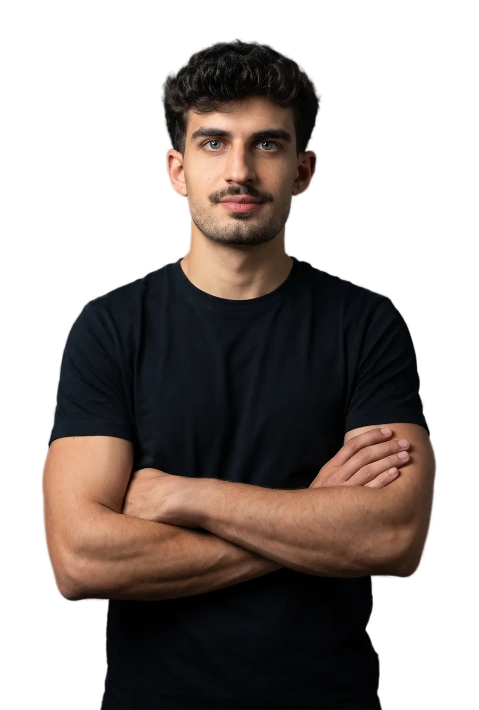
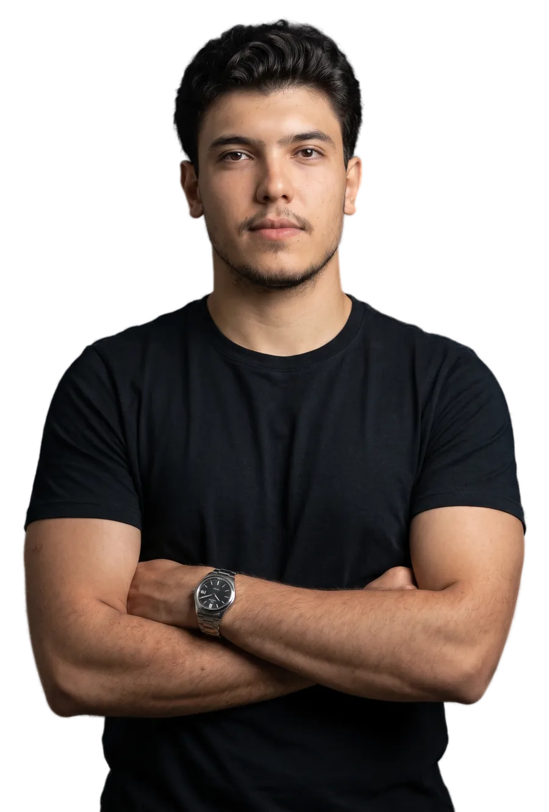

Marketing
Paulo
Estratégia, roteiro, direção de gravação e design. Cuida para que o seu perfil tenha método e constância.
Estratégia, perfil, conteúdo em vídeo e tráfego pago para advogados e escritórios, tudo dentro do Código de Ética. Sua parte é gravar.
Marketing e Direito na mesma mesa.
Um profissional de marketing e um advogado, cuidando só de advogados e escritórios.

Estratégia, roteiro, direção de gravação e design. Cuida para que o seu perfil tenha método e constância.

Advogado. Faz a revisão ética de cada peça e valida o conteúdo jurídico antes de ele chegar até você.
Uma equipe só, do estudo ao relatório. Sua parte é gravar e aprovar.
O primeiro mês monta a base. A partir dele, o conteúdo sai toda semana e o plano é revisto todo mês.
Conversa sobre a sua área, o seu público e a sua rotina. Estudo do perfil atual e dos concorrentes.
Para quem você fala e como quer ser lembrado. Daí sai o plano de conteúdo.
Identidade do perfil, fotos, bio, destaques, fixados, site e Perfil da Empresa no Google.
Kit de luz montado, posição certa e testes de estilo até achar o seu jeito.
Roteiro, gravação, edição e publicação nas três redes, com revisão ética antes de ir ao ar.
Com a base pronta, entram as campanhas pagas. Todo mês, reunião com os números e ajuste do plano.
Todo conteúdo é revisado pelo Provimento 205/2021 da OAB antes de chegar até você.
@
⚖️ Marketing jurídico estratégico
📈 Posicionamento, conteúdo e autoridade digital
🤝 Direito + Marketing na mesma mesa
Se a sua dúvida não estiver aqui, pergunte na conversa do diagnóstico.
O vídeo é o centro do plano, porque mostra quem você é antes do primeiro contato. A Ethos entrega o roteiro, o kit de luz e o treino. Você grava no celular, quando puder, e pode errar: a edição resolve.
Não. Ninguém sério garante número de clientes, de seguidores ou de visualizações, e o Código de Ética não permite que o advogado prometa resultado.
A Ethos garante o que depende dela: estratégia, constância, um perfil profissional e um relatório todo mês para você ver o que está funcionando.
Peça o diagnóstico mesmo assim. Ele cabe em uma página e mostra 3 pontos fortes, 3 ajustes e 1 recomendação para o seu perfil atual. Sem compromisso.
Sim. Campanhas no Instagram, no Facebook e no Google, a partir do segundo mês, quando o perfil e o conteúdo já estão de pé. O anúncio leva conteúdo informativo, nunca promessa de resultado, e os números entram no relatório mensal.
Depende do que o seu escritório já tem e do que precisa. A proposta vem depois do diagnóstico, em uma página, com tudo o que está incluído.
Mande o @ do seu Instagram. A Ethos devolve um diagnóstico de uma página. Sem compromisso.
Prefere falar direto? WhatsApp